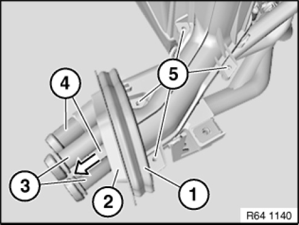
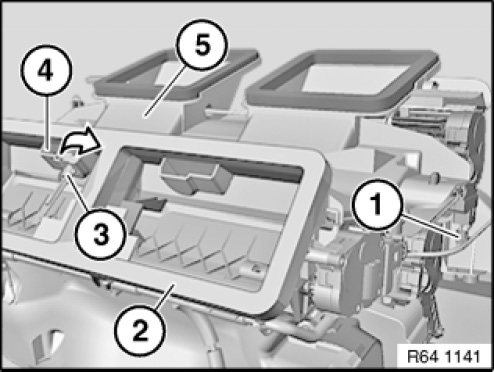
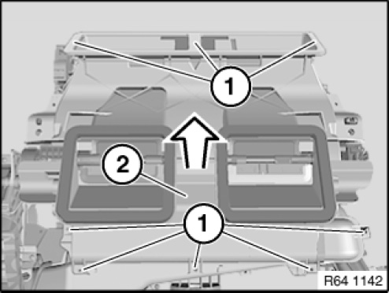
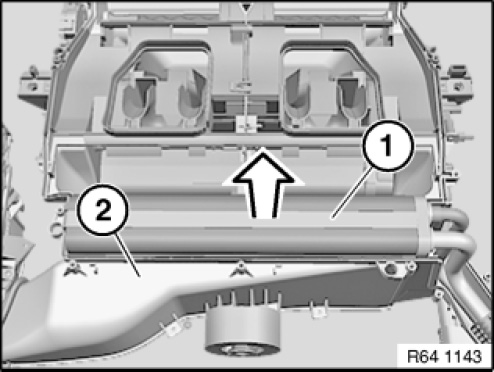

Evaporator Core: Service and Repair
64 51 591 Removing And Installing/Renewing Evaporator

Necessary preliminary tasks:
- Remove heater/air conditioner

Carefully pull rubber grommet (1) and foam seal (2) over pipes (3) and (4).
NOTE:
If necessary, replace rubber grommet (1) and/or foam seal (2).
Release screws (5).

Unfasten plug connection (1) and disconnect.
Carefully remove gasket (2) and all remnants.
Installation note:
Replace gasket (2).
Turn temperature sensor for cold-air distributor (3) in direction of arrow and detach in upwards direction. Expose connecting line (4) of temperature sensor for cold-air distributor (3) towards rear of heater/air conditioner (5).

Release screws (1).
Remove upper housing section (2) of heater/air conditioner in direction of arrow.
Installation note:
Make sure upper housing section (2) is correctly seated on heater/air conditioner.

Pull evaporator (1) in direction of arrow out of lower housing section (2) of heater/air conditioner.
Installation note:
Make sure evaporator (1) is correctly seated in lower housing section (2) of heater/air conditioner.

IMPORTANT:
Do not bend radiator fins.
If necessary, clean or straighten cooler fins with slat comb.